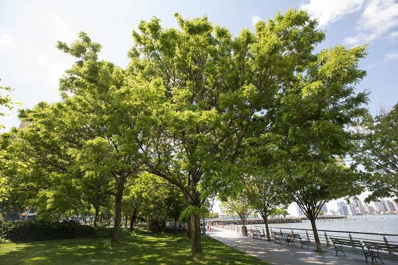
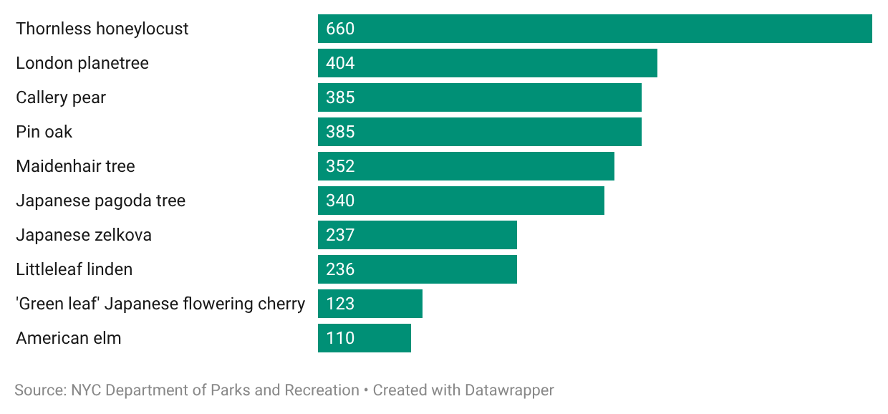
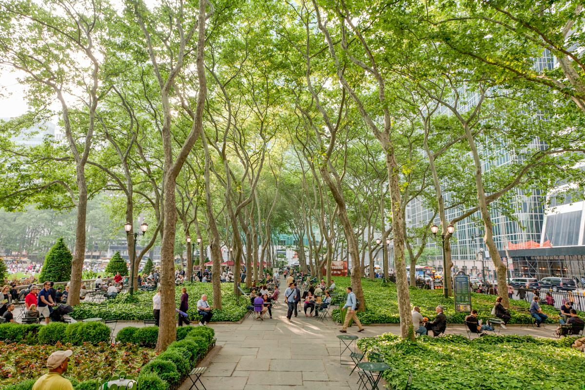
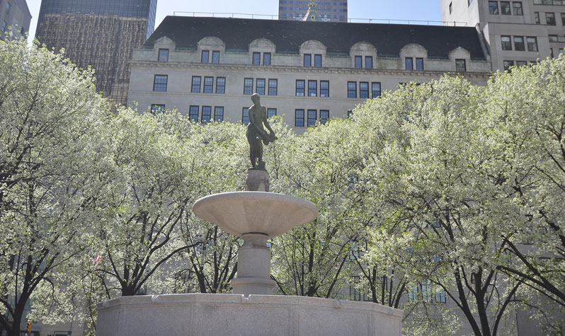

The Best Trees in New York City
(according to some tree nerds on the Internet)
I found out that the New York City Department of Parks and Recreation allows users of their New York City Tree Map to mark their favorite trees, which is adorable. I was curious to know which types of trees New Yorkers (I assume it's mostly New Yorkers using the website) love the most. To get to the bottom of this, I joined together data about favorite trees with another dataset from the NYC Department of Parks and Recreation. And the winner is... the thornless honeylocust!

Here's a look at some of the other favorites.

I was surprised to see that cherry blossom trees weren't higher up on the list, but if you combine the different types of cherry blossom trees into one category, they would be the most favorited. The second favorite type of tree was the London planetree. If you have ever been to Bryant Park and thought, "wow, look at these trees!" you were admiring Longdon planetrees.

In third place, we have the Callery pear tree.
